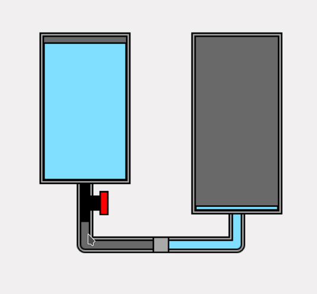
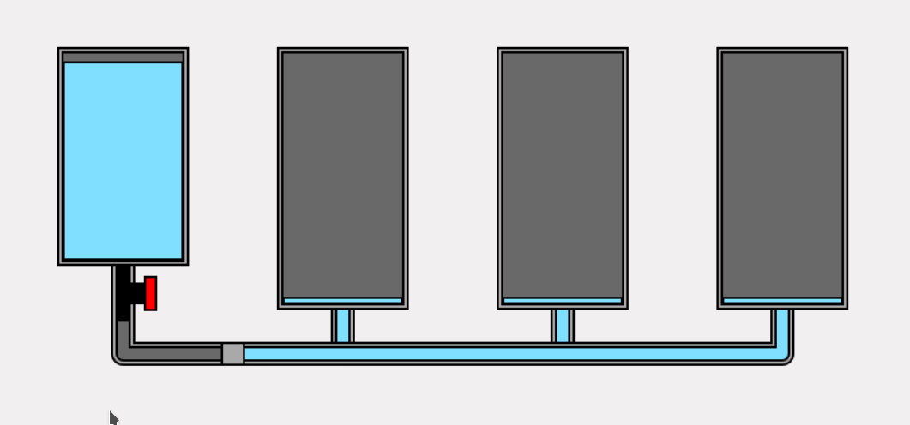
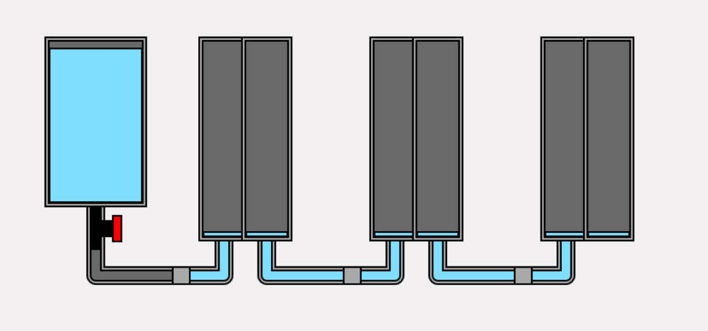
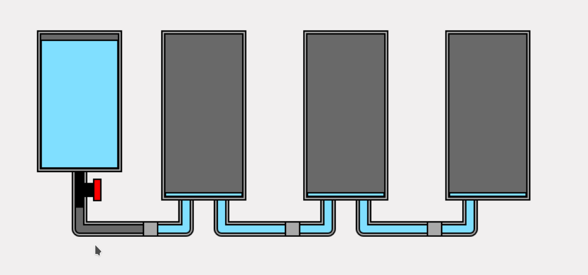

CONTEXT
For the third year in a row, I participated in the JS13K game jam, where the goal is to create a web-based video game in one month with a file size under 13 KB. This size constraint encourages creativity, and every JS13K game has something unique about it.
This year's theme for 2025 was BLACK CAT.
THE IDEA
I don't know why, but I immediately decided I was going to make a game about washing a dirty black cat.
I imagined a cat in a painter's studio getting stained with paint, or maybe an alley cat getting dirty while rummaging through trash... In the end, I went with a "Cat Wash" set against a modern city backdrop. I made this choice because the play on "Car Wash" amused me, and because it seemed feasible to procedurally generate (with minimal code) a modern cityscape based on buildings.
GAMEPLAY
Finding the right gameplay for a game is, in my opinion, the most complex part. It needs to be simple, innovative, fun, and engaging for the player.
In "Wash The Cat", the gameplay is based on a mix of puzzle-solving and precise timing. Mixing these two elements wasn't necessarily a great idea, and many players complained about it.
THE HYDRAULIC SYSTEM
I had in mind to implement a hydraulic system to deliver water to a shower.
There was obviously the option to make a Pipe Mania clone, but that seemed uninteresting to me. So I went with a system based on communicating vessels. To my surprise, I couldn't find any game using this concept, so I had to invent everything from scratch.
The problem with communicating vessels is that overall, the water level in the system will decrease due to gravity, which limits gameplay possibilities. To spice things up a bit, I implemented a faucet system that triggers indirectly when a certain water level is reached in a tank. This allows the game to be more dynamic and more engaging.
THE PHYSICS
The basic idea is quite simple: balance the pressures of the different nodes in the system.
The physics is based on 2 main components:
- Tanks that contain the water
- Distributors that connect multiple tanks together
The pipes are just links between tanks and distributors; the faucets only serve to ignore a tank in calculations. Thus, pipes and faucets don't really play a role in the physics—the essential components are the tanks and distributors.
The algorithm used is simple:
- Calculate the pressure of each tank: this pressure depends solely on the tank's height and the water height in that tank
- Calculate the pressure in each distributor: it's simply the average of the pressures of each tank connected to the distributor
- Calculate the volume of water to move in each tank: it's proportional to the difference between the tank's pressure and the pressure of the distributor it's connected to
- Update the water height in each tank: obvious calculation when you know the volume to move and the tank's diameter
At first glance, this mechanism seems to work perfectly.
But there's a big problem: the algorithm doesn't handle the fact that the total amount of liquid must remain constant. Indeed, in this algorithm, the volume of water to move only depends on the pressure difference between the distributor and the tank, regardless of what's happening in other tanks. The algorithm therefore only works if 2 tanks are connected to a distributor; beyond that, the total amount of liquid in the system won't be constant. This is blatant in the following example:
Dealing with this liquid conservation issue is complex and requires iterative flow-balancing algorithms. In one month, I had neither the time nor the desire to handle this properly, so I decided to cheat with the physics.
To do this, I always connect only 2 tanks to a distributor since that's the only case that works perfectly. As a complement, I created a "combo" object that merges multiple tanks; the combo's water level is simply the average level of each tank. This ensures the conservation of the total liquid quantity in the system.
The final algorithm becomes:
- Steps 1 to 4: see above
- Step 5: Calculate the height of combos (average of tank heights)
Example: System without the combos
Same with the combos
The result is realistic and allows for creating just about any imaginable hydraulic system.
LAST DIFFICULTY
This might seem a bit silly, but I struggled to determine whether a pipe is full or empty.
Indeed, in the implemented mechanics, the only information we know about the pipe is its flow rate. If the flow rate is different from 0, then the pipe is full, but if the flow rate is zero, the pipe may or may not be full depending on the situation.
So here again, due to the lack of precision in my hydraulic engine, I had to find a solution that's dirty from a physics standpoint but creates enough of an illusion that it works.
Thus, the rule I applied when a pipe's flow is zero is as follows: I consider the pipe full if it's connected to a non-empty tank and that tank's faucet is open.
CONCLUSION
I really struggled to ship a game this year and almost gave up at the beginning of the third week of the competition.
The main difficulties were:
- Setting up the hydraulic engine
- Designing gameplay to make the game a little fun to play
In my opinion, you shouldn't hesitate to simplify things and take liberties with physics: in a small game, what matters isn't accuracy but the quality of the final illusion.
I want to thank my family who helped me in the creative process and playtested the game extensively.
I also want to mention the JS13K community, which is active, supportive, and friendly.
LINKS
Play (and give some stars if you want) on itch.io
Play game entry on js13kgames
Have a look to the source code on github